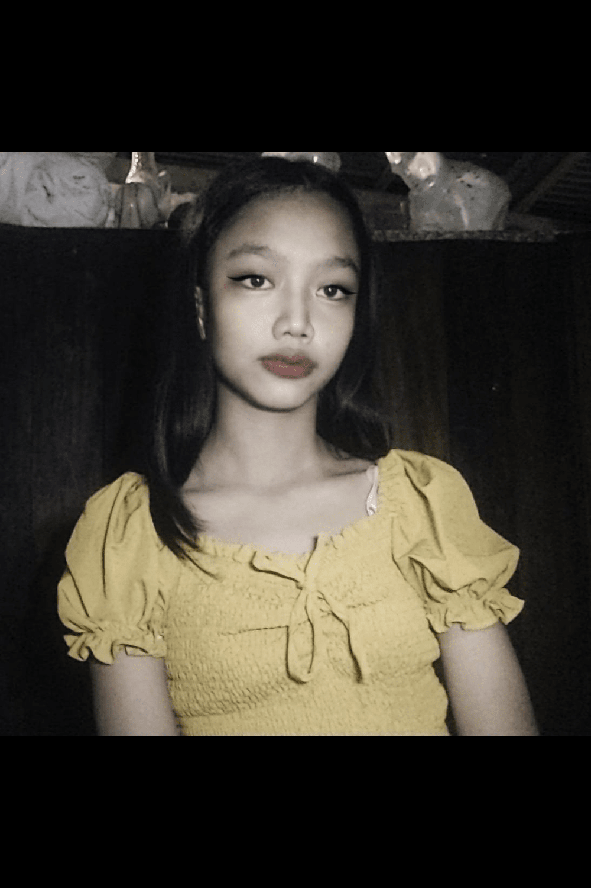

Donya Leonora

Ako si Prinsesa Leonora. Isang mabuti at mabait na dalaga. Ako ay matatagpuan sa isang kaharian sa ilalim ng balon sa bundok Armenya. Mayroon akong kapatid na nagngangalang Prinsesa Juana. Kaming magkapatid ay iniwan ng aming mga para pangalagaan at paglingkuran ang aming kaharian.
Pinangangalagaan ako ng isang uri nang ahas namay pitong ulo o tinatawag itong serpyente. Ako ay nagaalaga ng isang lobo. Bago ako mawalay sa aking ina ay pinamanahan niya ako ng diyamanteng singsing.
Ako ang ikalawang inibig ni Don Juan. Iniligtas ako ni Don Juan sa tagapangalaga kong serpyente kaya minahal korin siya. Ngunit nung kami ay papaahon sa balon ay naiwan ko ang aking dyamanteng singsing. Ngunit sa ‘di inaasahan, siya ay bumagsak dahil sa lubid na hinahawakan mistulang napigtas. Kayat sa pangyayaring iyon siya ay nawala na para nalamang isang bula. Iniintay ko siya ng pitong taon. Sa kanyang pagbabalik siya ay agad kong natunton ngunit sa isang iglap ang kanyang kapatid din pala ang aking makatutuluyan. Sa huli ay si Don Pedro at ako ang namuno sa aming kaharian ng Berbanya.